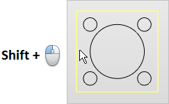

You can select curves & edges as machining regions for any Profile operation. You can pre-select the regions or select the Select Curve/Edge Regions button from the Control Geometry tab of the Profile operation dialog.
•Open and closed curves (Lines, Polylines, Arcs, Circles, Polycurves) can be selected as regions in Profile operations. •There is no limit on the number of curves that can be selected as regions. •Closed curves can be nested within each other. |
1.Select regions using the Select button on the menu bar. 2.Select regions graphically in the display window. 3.Multiple regions can be selected by pressing the CTRL button. These selected regions can be used to create Profile operations. The regions can be unselected using the None option (Select > None). 4.Select regions when creating or editing a Profile operation from the Control Geometry tab of the operation's dialog box shown below using: Multiple Selections: Multiple regions can be selected by pressing the CTRL button. These selected regions can be used to create machining operations. The regions can be unselected using the None option (Select > None). Chain Selections: You can automatically select a chain of curves or edges by pressing the <Shift> key while performing a left-click selection. This works with any curves or edges that are connected end-to-end.  Chain Select (<Shift> + Left-click) |